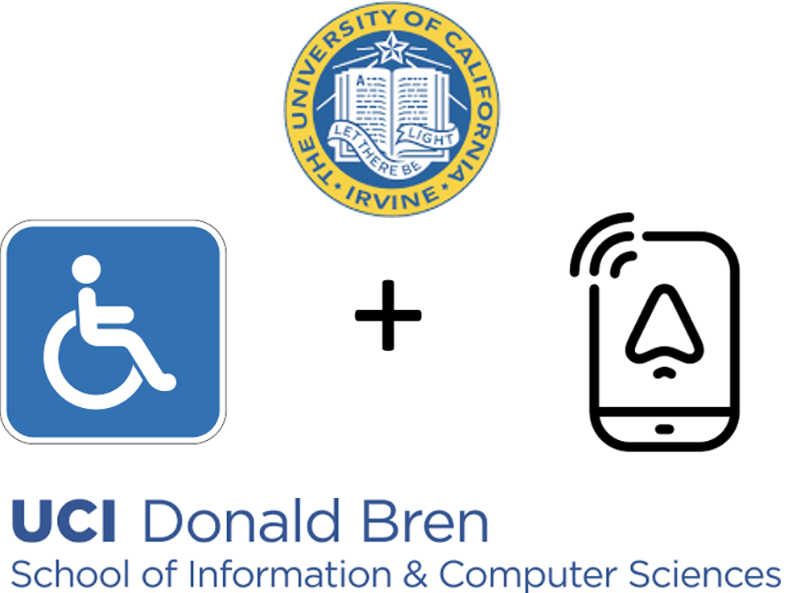
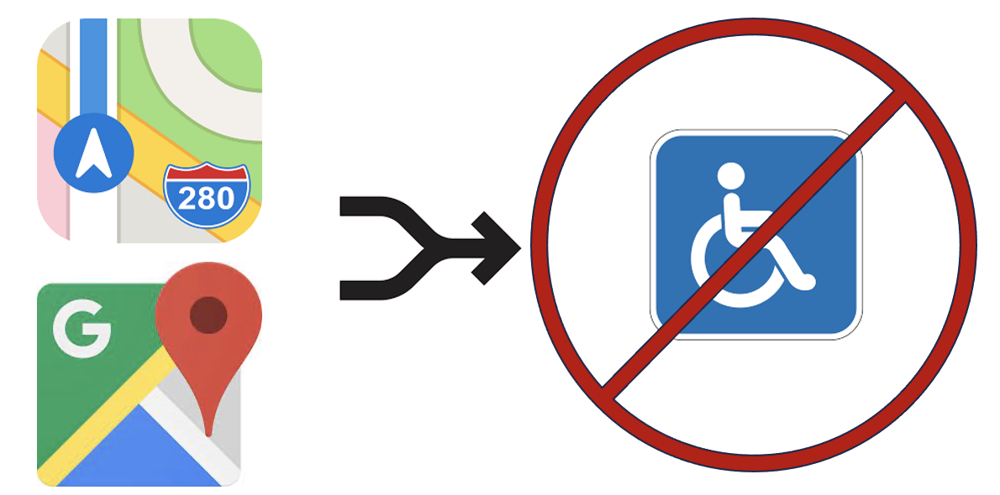
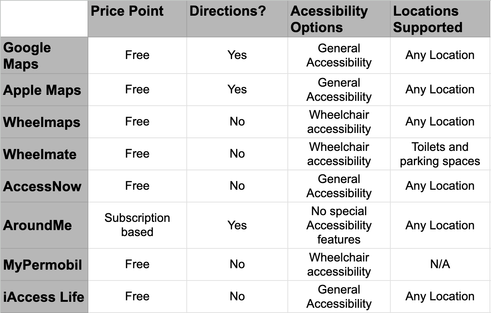

PathwayPal:
An Accessibility friendly navigation app

This project was done in collaboration with my classmates in my Informatics 132 class.
I took on the role of project manager for our team, and together we were able to create a solution for individuals to navigate campuses, the accessible way.
The Problem
As a former student with mobility issues from an injury, I was all too familiar with the issues that came with them.
Building off of my past experiences in trying to navigate hilly, obstacle ridden college campuses, I noticed that current navigation applications such as google maps and apple maps did NOT have a feature that was accessibility friendly. In other words, they did not offer wheelchair-friendly routes, which resulted in those individuals having to spend extra time themselves finding the accessible friendly routes on campus.

The Proposed Solution
Anteater Architects is proud to introduce Pathway Pal, a navigation application designed specifically to address the needs of students and visitors with limited mobility by providing efficient, wheelchair-friendly routes across college campuses.
We plan to create a proprietary algorithm that identifies handicap-accessible areas and pathways around campus buildings and calculates the shortest route with minimal elevation change. This ensures a seamless and efficient navigation experience for users with limited mobility.
Competitive Analysis & Research
We identified that Google maps and Apple maps only offer general accessibility, and apps like Wheelmaps that were similar to ours didn't provide directions and only showed where accessible spots were on the map. To stay unique, we decided to offer both navigation and wheelchair accessibility, as none of our competitors offered this.

Click here or on the image above to access our competitive analysis!
As this was only a quarter long project, we couldn't see our idea come to fruition completely. However, you can access our project timeline below, in which we planned out our design process for this application.
With the help of this projected timeline, me and my group were able to create user personas, identify pain points in existing technologies, and have a strong foundation laid out for the rest of the project moving forward.
Personas & User Scenarios
We drafted many user scenarios and personas to simulate possible issues that one may face using a traditional navigation application. With these in mind, we tailored the design of our navigation system to avoid stairs and certain types of terrain, such as rocks, hills, or uneven areas.